Άπληστη μέθοδος: Η άπληστη μέθοδος δίνει τα χειρότερα αποτελέσματα βάση αξίας των αντικειμένων, παρόλα αυτά είναι η ταχύτερη από όλες.
Εξαντλητική απαρίθμηση: Αν και με αυτή την προσέγγιση επιτυγχάνεται η βέλτιστη λύση, φαίνεται πως δε λειτουργεί για στιγμιότυπα που δεν έχουν μικρό αριθμό αντικειμένων. Ακόμα και από τα 50 αντικείμενα και πάνω σταματάει να τρέχει λόγω χρονικού περιορισμού.
Διακλάδωση και φραγή: Καλύτερα αποτελέσματα από την εξαντλητική απαρίθμηση, αλλά και αυτή η προσέγγιση ξεπερνά τον χρονικό περιορισμό ανάλογα με τη συσχέτιση της αξίας με το βάρος των αντικειμένων.
Δυναμικός προγραμματισμός: Ένας από τους βέλτιστους τρόπους προσέγγισης λύσης του προβλήματος. Δίνει την μέγιστη αξία αντικειμένων εντός χρονικού περιορισμού ανεξάρτητα το πλήθος αντικειμένων και τη συσχέτιση τους.
Ακέραιος προγραμματισμός: Ο βέλτιστος επιλυτής για μικρό αλλά και μεγάλο αριθμό αντικειμένων. Απαιτεί ελάχιστο χρόνο και επιστρέφει την μέγιστη αξία αντικειμένων. Σε προβλήματα με μικρό αριθμό αντικειμένων χρειάζεται περισσότερο χρόνο από άλλους επιλυτές αλλά είναι της τάξης των milliseconds και εντός χρονικού περιορισμού.
Εξειδικευμένος επιλυτής: Ο επιλυτής που διαθέτει το λογισμικό OR-Tools δίνει καλύτερα αποτελέσματα από τις τρεις πρώτες προσεγγίσεις αλλά όταν αυξάνεται ο αριθμός των αντικειμένων και το μέγεθος του σακιδίου ξεπερνά τον επιτρεπτό χρόνο για να επιστρέψει την μέγιστη αξία αντικειμένων.
Σύμφωνα με τα παραπάνω καταλήγουμε πως ο ακέραιος προγραμματισμός είναι η βέλτιστη προσέγγιση για την επίλυση του προβλήματος σακιδίου 0-1, ακολουθεί ο δυναμικός προγραμματισμός και έπειτα οι υπόλοιποι αφού υστερούν είτε στη μέγιστη αξία που επιστρέφουν είτε ξεπερνούν τον χρονικό περιορισμό που έχει τεθεί.
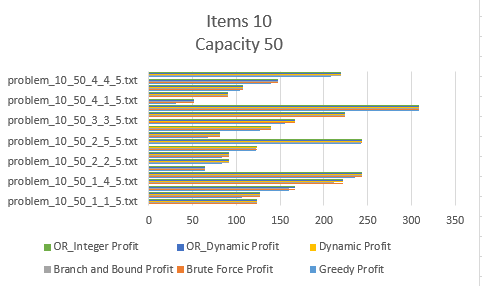 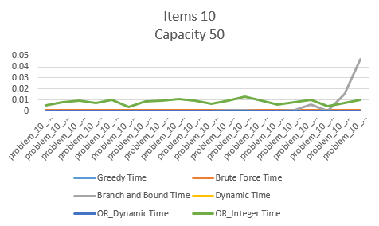 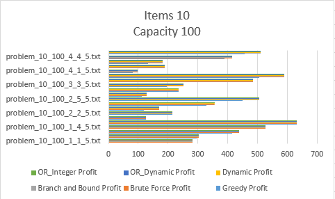 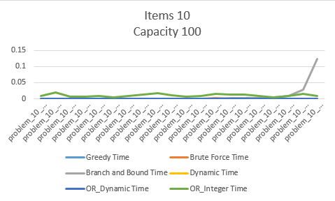 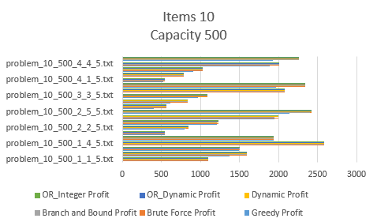 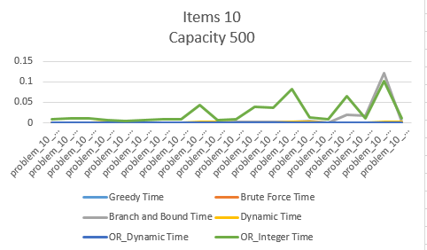 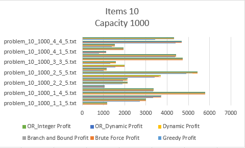 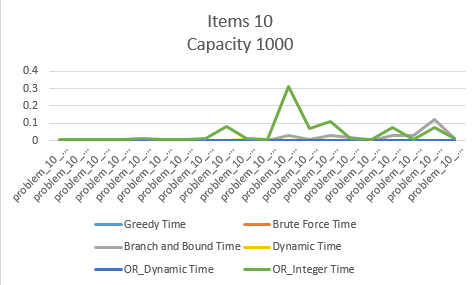 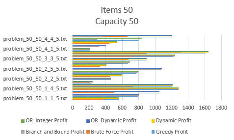 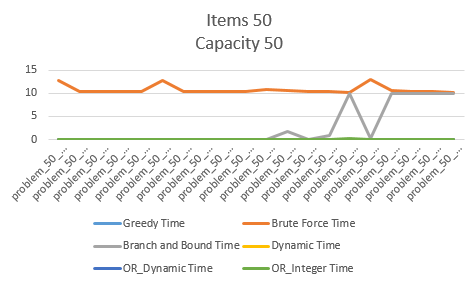 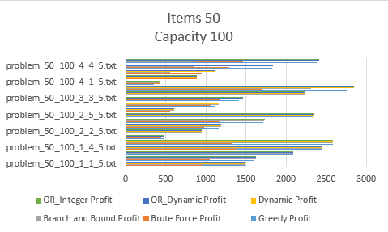 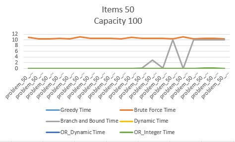 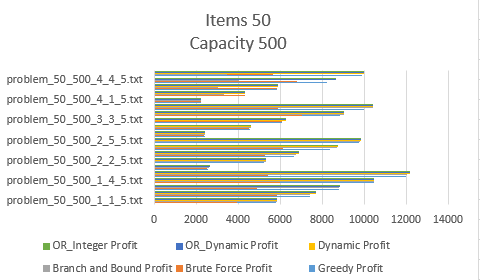 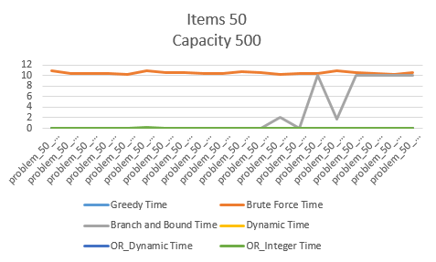 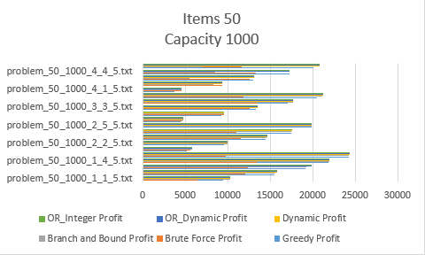 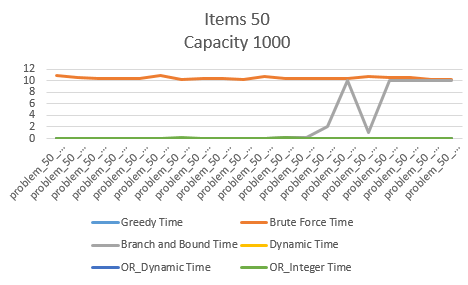 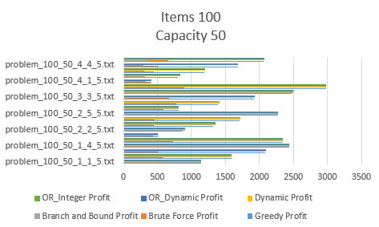 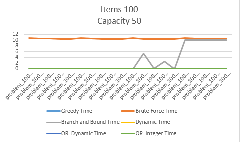 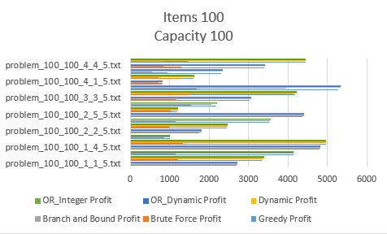 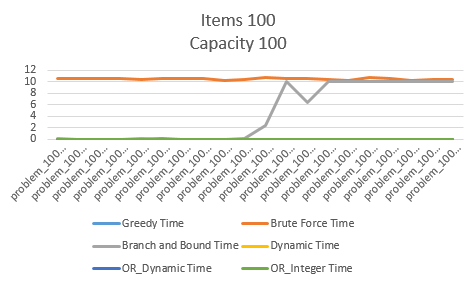 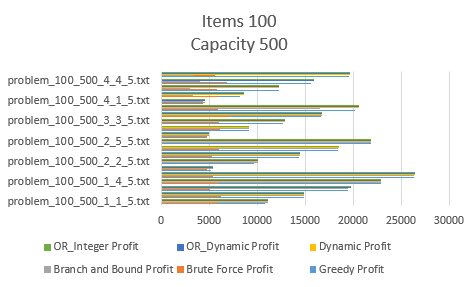 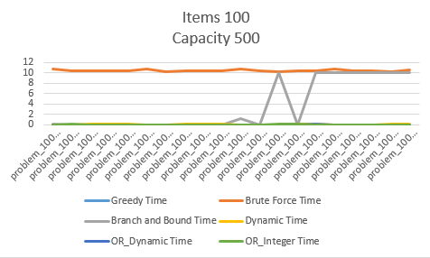 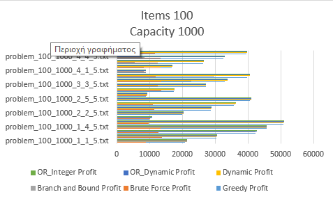 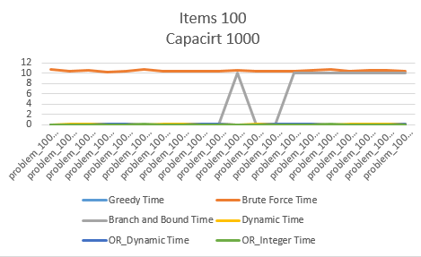 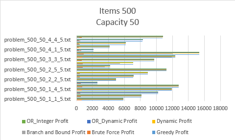 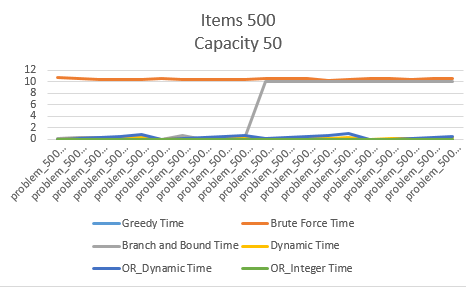 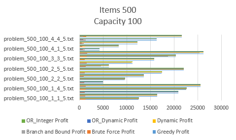 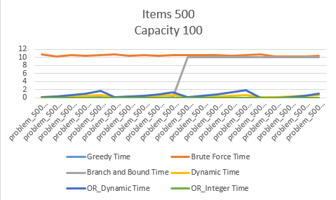 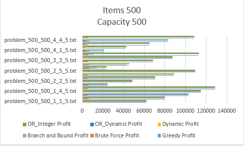 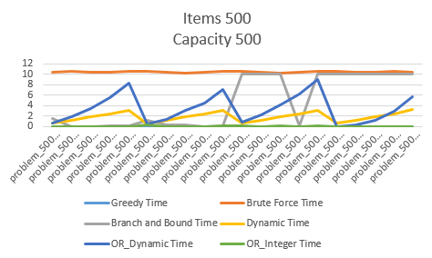 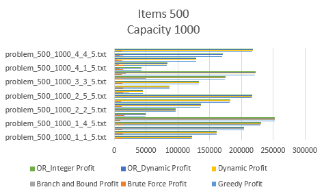 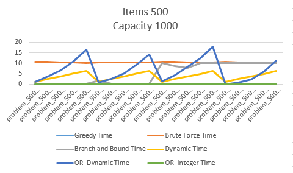 Διερεύνηση προσεγγίσεων επίλυσης του προβλήματος σακιδίου 0-1 (Knapsack 0-1) Εργασία ΠΜΣ Τάσιος Βασίλειος ΑΜ : 72 Περιγραφή του προβλήματος Knapsack 0-1 Το πρόβλημα 0-1 σακιδίου (Knapsack 0-1) αφορά ένα σύνολο από αντικείμενα για τα οποία γνωρίζουμε το βάρος και την αξία κάθε αντικειμένου. Ζητείται η επιλογή ενός υποσυνόλου των αντικειμένων έτσι ώστε το συνολικό βάρος από τα επιλεχθέντα αντικείμενα να μην ξεπερνά μια συγκεκριμένη τιμή βάρους και ταυτόχρονα να επιτυγχάνεται η μεγαλύτερη δυνατή αξία. Το πρόθεμα 0-1 στο όνομα του προβλήματος υποδηλώνει ότι κάθε αντικείμενο μπορεί είτε να επιλεχθεί είτε να μην επιλεχθεί στο σύνολο του και όχι τμηματικά. Δημιουργία στιγμιότυπων για το πρόβλημα Knapsack 0-1 Για τη δημιουργία προβλημάτων χρησιμοποιήθηκε ο κώδικας της γεννήτριας του άρθρου του David Pisinger (http://hjemmesider.diku.dk/~pisinger/generator.c) [1]. Δημιουργήθηκαν 320 διαφορετικά στιγμιότυπα για το πρόβλημα με διαφορετικές τιμές για τις παραμέτρους που παίρνει ως είσοδο ο κώδικας generator.c. Οι παράμετροι αυτοί διαφοροποιούν ως εξής τα στιγμιότυπα: n: ο αριθμός αντικειμένων, r: εύρος τιμών βάρους / αξίας t: τύπος συσχέτισης βάρους – αξίας (1=άσχετα, 2=χαμηλή σχέση, 3=υψηλή σχέση, 4=υποσύνολο) i: αριθμός στιγμιότυπου S: σύνολο στιγμιότυπων Δημιουργήθηκαν 5 στιγμιότυπα για κάθε ένα πρόβλημα με τις εξής διαφορετικές τιμές: n={10,50,100,500} r={50,100,500,1000} t={1,2,3,4} Για να δημιουργήσει η γεννήτρια τα στιγμιότυπα για αυτές τις διαφορετικές τιμές έγινε ένα πρόγραμμα script.sh που τρέχει το generator.c 320 φορές. Figure 1. script.sh Τα στιγμιότυπα τα οποία δημιουργούνται είναι της εξής μορφής: Figure 2.Problem_10_50_1_1_5.txt Ο πρώτος αριθμός αναγράφει το σύνολο των αντικειμένων, έπειτα για τις υπόλοιπες γραμμές έχουμε τα αντικείμενα τα οποία τα χαρακτηρίζει ένας αριθμός id, η αξία του αντικειμένου profit και το βάρος του αντικειμένου weight. Τέλος, ο αριθμός της τελευταίας γραμμής είναι το μέγιστο βάρος που μπορεί να χωρέσει το σακίδιο. Επίλυση στιγμιότυπων για το πρόβλημα Knapsack 0-1 Για την επίλυση ακολουθήθηκαν έξι διαφορετικές προσεγγίσεις: Άπληστη μέθοδος Εξαντλητική απαρίθμηση συνδυασμών Διακλάδωση και φραγή Δυναμικός προγραμματισμός Ακέραιος προγραμματισμός Εξειδικευμένος επιλυτής Όλα τα στιγμιότυπα του προβλήματος λύθηκαν και με τις έξι προσεγγίσεις και τα αποτελέσματα καταγράφηκαν α) σε αρχεία που περιλαμβάνουν την λύση καθενός με την αντίστοιχη προσέγγιση και β) σε ένα αρχείο csv που περιλαμβάνει για κάθε πρόβλημα την αξία της λύσης , το συνολικό βάρος που χρησιμοποιήθηκε αλλά και τον χρόνο που απαιτήθηκε για την εύρεση λύσης. Στο στάδιο αυτό τέθηκε χρονικός περιορισμός σε κάθε προσέγγιση για την εύρεση λύσης τα δέκα (10) δευτερόλεπτα. Όταν ξεπερνάει το όριο αυτό ο αλγόριθμος σταματάει να τρέχει και δίνει την μερική λύση που έχει βρει μέχρι στιγμής. Παρακάτω δίνεται μια ανάλυση των προσεγγίσεων για την επίλυση των προβλημάτων Knapsack 0-1. Άπληστη Μέθοδος (Greedy Approach) Για κάθε αντικείμενο υπολογίζεται ο λόγος αξίας προς βάρος και δίνεται προτεραιότητα στην εισαγωγή των αντικειμένων με τις μεγαλύτερες τιμές μέχρι να μην μπορεί να προστεθεί άλλο αντικείμενο στο σακίδιο. Εξαντλητική Απαρίθμηση Συνδυασμών (Brute Force – Full Enumeration) Δοκιμάζονται όλοι οι πιθανοί συνδυασμοί τοποθέτησης αντικειμένων στο σακίδιο (ανά ένα αντικείμενο, ανά δύο αντικείμενα, ανά τρία αντικείμενα κ.ο.κ.) και επιλέγεται η πλέον συμφέρουσα. Με άλλα λόγια, δημιουργούνται και ελέγχονται όλα τα υποσύνολα του συνόλου των αντικειμένων του στιγμιότυπου του προβλήματος. Διακλάδωση και Φραγή (Branch and Bound) Είναι μια βελτίωση της μεθόδου πλήρους απαρίθμησης που αναλύθηκε προηγουμένως. Αρχικά τα αντικείμενα διατάσσονται σε φθίνουσα σειρά λόγου αξίας προς βάρος. Στη συνέχεια δημιουργείται ένα δυαδικό δένδρο μερικών λύσεων. Σε κάθε κόμβο λαμβάνεται η απόφαση επιλογής αντικειμένου η οποία οδηγεί στο αριστερό υποδένδρο ενώ η μη επιλογή του οδηγεί στο δεξιό υποδένδρο. Επιπλέον σε κάθε κόμβο καταγράφεται το συνολικό βάρος και η συνολική αξία των αντικειμένων του. Η βασική ιδέα είναι ότι κάποιο κλάδοι του δένδρου δεν έχει νόημα να δημιουργηθούν καθώς δεν πρόκειται να οδηγήσουν σε καλύτερη λύση από κάποια που έχει ήδη βρεθεί. Αυτό γίνεται καταγράφοντας την καλύτερη τιμή που έχει εντοπιστεί ανά πάσα στιγμή αλλά και τον υπολογισμό ενός φράγματος καλύτερης περίπτωσης για κόμβους που πρόκειται να αναπτυχθούν προσθέτοντας επιπλέον αντικείμενα στα ήδη υπάρχοντα. Αναλυτικότερα, γίνεται «κλάδεμα» του δένδρου α) αν έχουμε ξεπεράσει το επιτρεπτό βάρος που χωράει το σακίδιο του προβλήματος και β) αν η λύση που έχουμε αυτή τη στιγμή δεν πρόκειται να αλλάξει αν αναπτυχθεί περεταίρω το υποδένδρο που βρίσκεται ο αλγόριθμος αυτή τη στιγμή. Δυναμικός προγραμματισμός (Dynamic programming) Χρησιμοποιείται αναδρομή, επίλυση μικρότερων προβλημάτων και καταγραφή ενδιάμεσων αποτελεσμάτων σε έναν πίνακα που οδηγεί σε λύση του προβλήματος. Συγκεκριμένα, με την προσέγγιση αυτή δημιουργείται ένας δισδιάστατος πίνακας που έχει ως στήλες το εύρος του επιτρεπτού μεγέθους του σακιδίου (από 0 έως Knapsack size) και γραμμές το εύρος των αναγνωριστικών (ids) των αντικειμένων του προβλήματος (από 0 έως μέγιστο item id). Κάθε κελί του πίνακα περιέχει τη μερική λύση του προβλήματος για μέγεθος σακιδίου τον αριθμό της στήλης και αντικείμενα το υποσύνολο των αντικειμένων μέχρι το αντικείμενο που αναγράφεται στη γραμμή που βρίσκεται. Έτσι, η τελική λύση του προβλήματος θα βρίσκεται στο τελευταίο κελί του πίνακα που θα είναι για το κανονικό μέγεθος του σακιδίου (knapsack size) και όλα τα αντικείμενα του στιγμιότυπου αυτού. Ακέραιος προγραμματισμός (Integer programming) Αποτελεί έναν γενικό τρόπο επίλυσης προβλημάτων που είναι δυνατόν να μοντελοποιηθούν με συγκεκριμένο τρόπο. Στηρίζεται στον αλγόριθμο επαναληπτικής βελτίωσης simplex [5] και είναι σε θέση να εντοπίζει λύσεις ακόμα και εάν υπάρχουν περιορισμοί ακεραιότητας για τις τιμές των μεταβλητών απόφασης. Χρησιμοποιήθηκε ο επιλυτής προβλημάτων ακέραιου προγραμματισμού GLPK [2] μέσω του λογισμικού OR-Tools [3]. Για τον επιλυτή αυτόν χρειάστηκε να δοθούν τα βάρη και οι αξίες του κάθε αντικειμένου σαν παράμετροι και έπειτα να καλεστεί για να δώσει τη λύση του προβλήματος. Εξειδικευμένος επιλυτής Είναι ο επιλυτής που διαθέτει το λογισμικό OR-Tools [4] για το πρόβλημα του σακιδίου 0-1 και βασίζεται στον δυναμικό τρόπο επίλυσης. Όπως και στον ακέραιο προγραμματισμό χρειάστηκε να μοντελοποιηθούν τα αντικείμενα του προβλήματος για να δοθούν ως παράμετροι και έπειτα να καλεστεί για να δώσει τη λύση. Αποτελέσματα Παρακάτω δίνονται τα αποτελέσματα για κάθε επιλυτή για όλα τα στιγμιότυπα του προβλήματος σακιδίου 0-1 αφού πρώτα έγινε μια ομαδοποίηση σύμφωνα με τον αριθμό τον αντικειμένων αλλά και το μέγεθος του σακιδίου. Τα δύο γραφήματα για κάθε ομαδοποίηση δείχνουν α) την αξία των αντικειμένων που περιλαμβάνει κάθε σακίδιο και β) τον χρόνο που χρειάστηκε κάθε επιλυτής. Συμπεράσματα Από τα αποτελέσματα φαίνονται οι διαφορές της κάθε προσέγγισης για το πρόβλημα. Άπληστη μέθοδος: Η άπληστη μέθοδος δίνει τα χειρότερα αποτελέσματα βάση αξίας των αντικειμένων, παρόλα αυτά είναι η ταχύτερη από όλες. Εξαντλητική απαρίθμηση: Αν και με αυτή την προσέγγιση επιτυγχάνεται η βέλτιστη λύση, φαίνεται πως δε λειτουργεί για στιγμιότυπα που δεν έχουν μικρό αριθμό αντικειμένων. Ακόμα και από τα 50 αντικείμενα και πάνω σταματάει να τρέχει λόγω χρονικού περιορισμού. Διακλάδωση και φραγή: Καλύτερα αποτελέσματα από την εξαντλητική απαρίθμηση, αλλά και αυτή η προσέγγιση ξεπερνά τον χρονικό περιορισμό ανάλογα με τη συσχέτιση της αξίας με το βάρος των αντικειμένων. Δυναμικός προγραμματισμός: Ένας από τους βέλτιστους τρόπους προσέγγισης λύσης του προβλήματος. Δίνει την μέγιστη αξία αντικειμένων εντός χρονικού περιορισμού ανεξάρτητα το πλήθος αντικειμένων και τη συσχέτιση τους. Ακέραιος προγραμματισμός: Ο βέλτιστος επιλυτής για μικρό αλλά και μεγάλο αριθμό αντικειμένων. Απαιτεί ελάχιστο χρόνο και επιστρέφει την μέγιστη αξία αντικειμένων. Σε προβλήματα με μικρό αριθμό αντικειμένων χρειάζεται περισσότερο χρόνο από άλλους επιλυτές αλλά είναι της τάξης των milliseconds και εντός χρονικού περιορισμού. Εξειδικευμένος επιλυτής: Ο επιλυτής που διαθέτει το λογισμικό OR-Tools δίνει καλύτερα αποτελέσματα από τις τρεις πρώτες προσεγγίσεις αλλά όταν αυξάνεται ο αριθμός των αντικειμένων και το μέγεθος του σακιδίου ξεπερνά τον επιτρεπτό χρόνο για να επιστρέψει την μέγιστη αξία αντικειμένων. Σύμφωνα με τα παραπάνω καταλήγουμε πως ο ακέραιος προγραμματισμός είναι η βέλτιστη προσέγγιση για την επίλυση του προβλήματος σακιδίου 0-1, ακολουθεί ο δυναμικός προγραμματισμός και έπειτα οι υπόλοιποι αφού υστερούν είτε στη μέγιστη αξία που επιστρέφουν είτε ξεπερνούν τον χρονικό περιορισμό που έχει τεθεί. Αναφορές [1]. David Pisinger. Core problems in knapsack algorithms. Operations Research, 47(4):570–575, 1999 [2]. GNU. GLPK: (GNU Linear Programming Kit). https://www.gnu.org/software/glpk/, 2019. [Online; accessed 3/1/2020]. [3]. Laurent Perron and Vincent Furnon. Google ORTools: MixedInteger Programming. https://developers.google.com/optimization/mip/integer_opt, 2020. [Online; accessed 3/1/2020]. [4]. Laurent Perron and Vincent Furnon. Google ORTools: The Knapsack Problem. https://developers.google.com/optimization/bin/knapsack, 2020. [Online; accessed 3/1/2020]. [5]. Wolfram Web Resource. Simplex Method. http://mathworld.wolfram.com/SimplexMethod.html, 2020. [Online; accessed 3/1/2020].